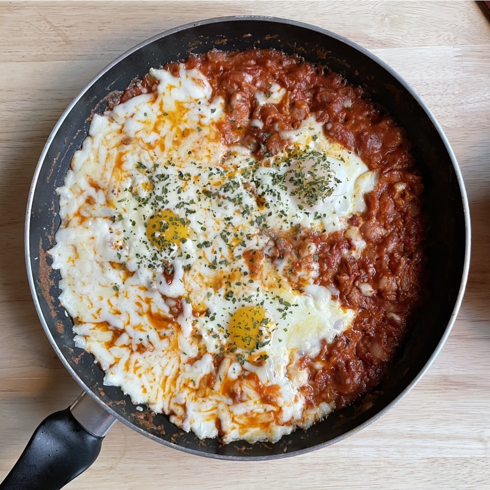

샥슈카

준비물
홀토마토
베이컨
소세지
마늘
양송이 버섯
계란
모짜렐라 치즈
버터
팬에 오일과 마늘을 넣고 볶다가 소세지와 베이컨을 익혀준다.
소세지와 베이컨이 익어갈 때 쯤 양파와 버터를 넣고 볶아준다.
소금과 후추로 살짝 간을 한다.
홀토마토를 붓고 소스를 걸죽하게 만든다.
간을 싱겁게 보고, 계란이 들어갈 자리를 미리 만든 후 계란을 올린다.
뚜껑을 덮고 4분 기다린다.
모짜렐라 치즈를 뿌린 뒤 1분간 뚜껑을 덮고 치즈를 녹인다.
완성!